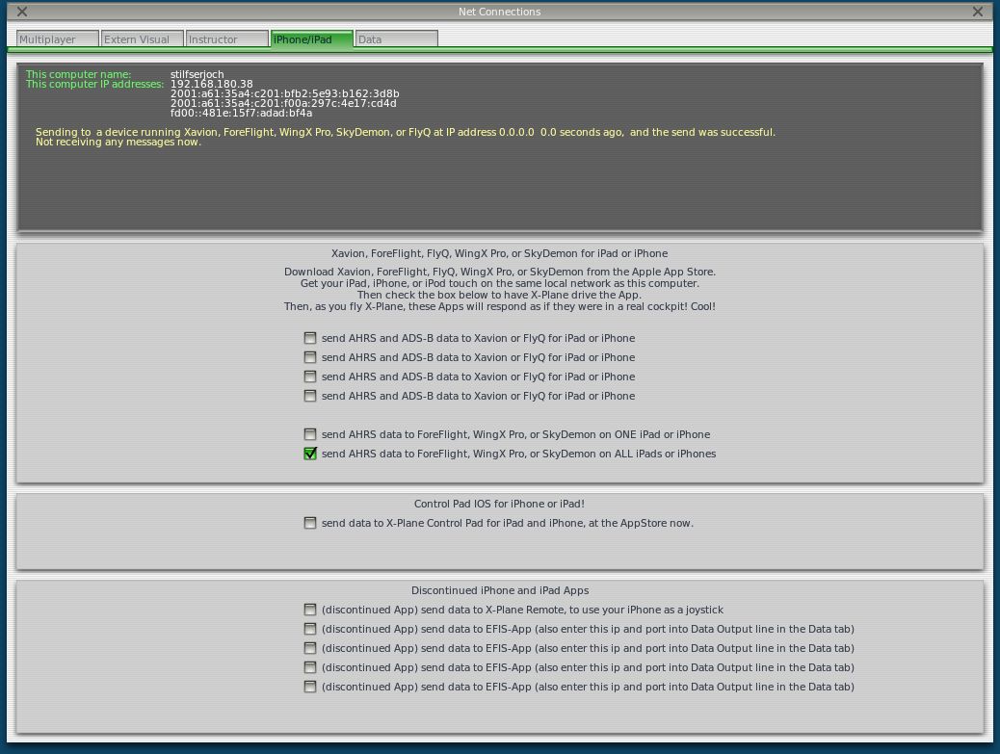
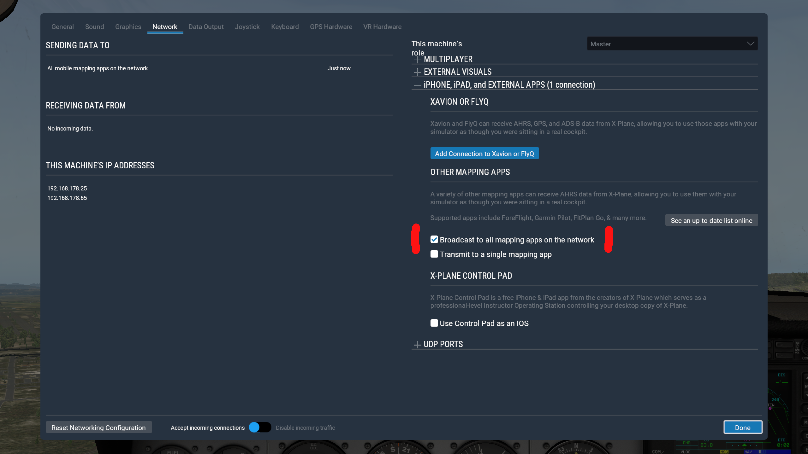

Connect your flight simulator¶
Enroute Flight Navigation can connect to flight simulator software. The app has been tested with the following programs.
Users have reported success with the following programs.
Please contact us if you are aware of other programs that also work.
Note
Enroute Flight Navigation treats flight simulators as traffic receivers. To see the connection status, open the main menu and navigate to the “Information” menu.
Before you connect¶
This manual assumes a typical home setup, where both the computer that runs the flight simulator and the device that runs Enroute Flight Navigation are connected to a Wi-Fi network deployed by a home router. Make sure that the following conditions are met.
The computer that runs the flight simulator and the device that runs Enroute Flight Navigation are connected to the same Wi-Fi network. Some routers deploy two networks, often called “main network” and a “guest network”.
Make sure that the router allows data transfer between the devices in the Wi-Fi network. Some routers have “security settings” that disallow data transfer between the devices in the “guest network”
Set up your flight simulator¶
Your flight simulation software needs to broadcast position and traffic information over the Wi-Fi network. Once this is done, there is no further setup required. As soon as the flight simulator starts to broadcast information over the Wi-Fi network, the moving map of Enroute Flight Navigation will adjust accordingly. To end the connection to the flight simulator, simply leave the flight simulator’s Wi-Fi network.
X-Plane 10¶
Follow the explanation on this page, which explains how to connect X-Plane 10 to the commercial app ForeFlight. In short: Open the “Settings” window and click “Internet Options”. There, go to the “iPhone/iPod” tab and turn on the “ForeFlight” option. Please be sure to disable output of data on tab “Data”.
X-Plane 11¶
Open the “Settings” window and choose the “Network” tab. Locate the settings group “This machine’s role” on the right-hand side of the tab. Open the section “iPHONE, iPAD, and EXTERNAL APPS” and select the item “Broadcast to all mapping apps on the network” under the headline “OTHER MAPPING APPS”.
MS Flight Simulator¶
UNKNOWN AS OF NOW.
Other programs¶
The flight simulator needs to be set up to send UDP datagrams in one of the standard formats “GDL90” or “XGPS” to ports 4000 or 49002. Given the choice, GDL90 is generally the preferred format.
Troubleshooting¶
Enroute Flight Navigation treats flight simulators as traffic receivers. To see the connection status, open the main menu and navigate to the “Information” menu. If the entry “Traffic Receiver” is highlighted in green, then Enroute Flight Navigation has already found the program in the network and has connected to it. If not, then select the entry. The “Traffic Receiver Status” page will open, which explains the connection status in more detail.